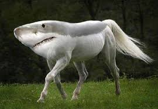

Magamról röviden: Kiskorom óta szeretnék űrhajós lenni, gyermekkori álmom volt, hogy az első ember legyek a Marson, emiatt tanulmányaim során fontos szerepet kapott a matematika és a fizika.
Emellett barátságos, természetszerető személy vagyok, legnagyobb hobbim az olvasás de szeretek sportolni is.
Végzettségek:
Extra képességek rangsorolva:
A kedvenc oldalamon szoktam tájékozódni az űrutazásról a Rick&Morty sorozatot nézve.
